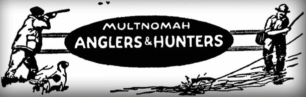
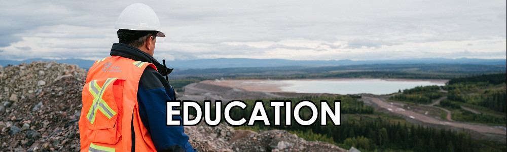
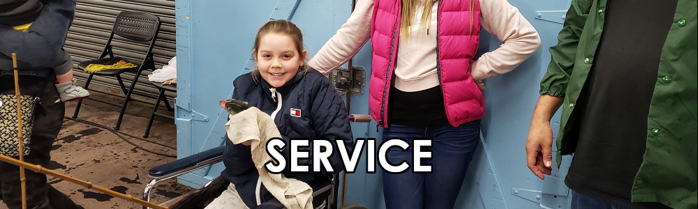
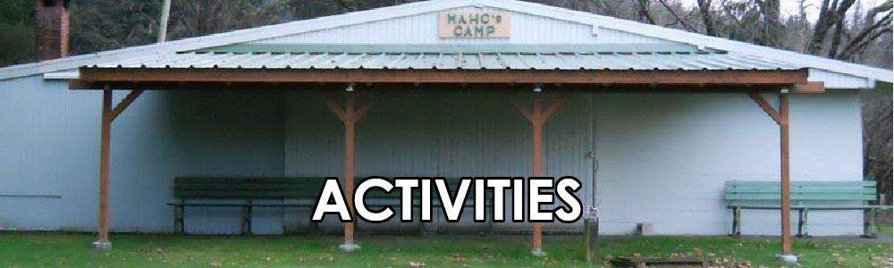

About Multnomah Anglers & Hunters
Multnomah Anglers & Hunters is Oregon's oldest sportsmen's organization, the third oldest sportsmen's organization in the United States, and the longest continuously running sportsmen's organization west of New York. Established January 5, 1883, as the Multnomah Rod & Gun Club, we have spent the last 137 years supporting wildlife conservation and education efforts for the benefit of sportsmen and all citizens of Oregon. We are a registered non-profit 501(c)(3) organization.

What We Do
Established Oregon beaches as public property via the Oregon Beach Bill
Protected Oregon steelhead via state recognition as a game fish via Oregon House Bill 1302
Preserved the natural state of the Deschutes River-purchased lower 12 miles of shoreline for state management
Funded reestablishment programs to stabilize turkey and sheep populations in Oregon
Provided guidance on creation and development of Forest Park in Portland
Raised funds for EE Wilson Wildlife Area, ODFW Access and Habitat Program, and other wildland management programs

Support OSU Fisheries and Wildlife Department with six annual student scholarships and an annual grant
Sponsor youth to attend Orcas Island Wildlife & Environmental Camp annually
Provide expertise to government agencies pertaining to natural resources and the environment
Host lectures on conservation and angling/hunting topics

Run the free kids' trout pond at the PNW Sportsmen's Show every year since 1975
Organize work parties at White River Game Management Area
Participate in fin-clipping events at fish hatcheries for fisheries management
Maintain and improve wildlife habitat, including building deer feeders and fences and planting vegetation
Advocate and lobby for conservation needs and anglers' and hunters' rights

Access to our private 5-acre campground near Tillamook, OR
Group outings, including potluck dinners, clamming, crabbing, and fishing trips, and holiday picnics
Monthly group meetings with guest speakers, drawings, and refreshments
Annual fishing and hunting competitions